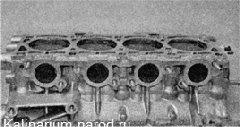
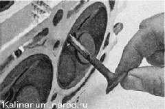
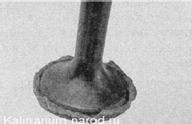
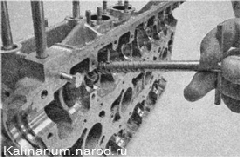
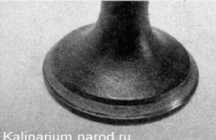
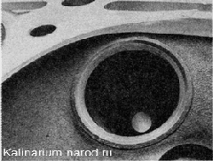

Головка блока цилиндров - проверка и притирка клапановДля выполнения работы потребуются: — специальный шаблон или широкая слесарная линейка; — набор плоских щупов; — приспособление для притирки клапанов; — притирочная паста. Проверка 1. Снимаем головку блока цилиндров. 2. Очищаем головку блока и корпус подшипников от грязи и нагара, отмываем ее от масляных отложений, металлической щеткой удаляем нагар со стенок камер сгорания. 3. Внимательно осматриваем головку блока и корпус подшипников. На них не должно быть трещин. Па рабочих поверхностях опор распределительных валов, корпуса подшипников и стенках посадочных отверстий гидротолкателей не должно быть задиров и следов наволакивания металла. Направляющие и седла клапанов должны плотно сидеть в теле головки, без следов их смешения при работе ГРМ. Клапаны и их седла не должны иметь трещин и следов прогорания. 4. Проверяем плоскостность головки блока цилиндров специальным шаблоном. Если шаблона нет, то проверить нижнюю привалочную плоскость головки с достаточной степенью точности можно при помощи широкой слесарной линейки. Ребром прикладываем линейку по диагонали к плоскости головки. Убеждаемся в отсутствии зазора между ребром линейки и плоскостью головки. Зазор может наблюдаться как в средней части плоскости, так и по ее краям. Замер зазора проводим по обеим диагоналям набором плоских щупов. Максимально допустимый зазор — 0.1 мм. Если зазор больше допустимого, головка подлежит фрезерованию привалочной плоскости или замене. Заменять головку блока цилиндров следует только в комплекте с корпусом подшипников. 5. Проверяем герметичность головки блока. Для этого на торцевой поверхности головки заглушаем окно подачи охлаждающей жидкости к термостату (можно установить патрубок термостата, подложив под него прокладку, вырезанную из листовой резины). Переворачиваем головку и заполняем ее внутренние полости для охлаждающей жидкости керосином. 6. Убеждаемся в отсутствии утечки керосина из головки блока. В случае обнаружения утечки, а также при обнаружении раковин на привалочной плоскости, можно попытаться отремонтировать головку блока с помощью холодной сварки или заменить ее. 7. Для проверки герметичности клапанов головки блока укладываем ее на горизонтальной поверхности привалочной плоскостью вверх. 8. Заполняем камеры сгорания головки блока керосином и ждем несколько минут. Если уровень керосина в какой-нибудь камере понижается, значит, негерметичен один или оба клапана. Негерметичность клапанов можно устранить притиркой при отсутствии на тарелке и седле клапана трещин, рытвин и механических повреждений. Притирка клапанов 1. Снимаем маслосъемный колпачок с клапана. 2. Вынимаем клапан из направляющей втулки. 
3. Наносим на рабочую кромку клапана притирочную пасту. 4. Устанавливаем клапан в головку блока и закрепляем на его стержне приспособление для притирки клапанов. 5. Прижимая клапан к седлу, поворачиваем его из стороны в сторону. После 10—15 движений поворачиваем клапан на 90° и продолжаем притирку. 6. Притирку проводим до образования равномерного кольцеобразного обода на тарелке клапана.. ...и его седле. 7. Удаляем остатки притирочной пасты с клапана и его седла. 8. Устанавливаем клапан на место в последовательности, обратной снятию. При сборке устанавливаем новые маслосъемные колпачки. 9. Аналогично притираем остальные клапаны. |